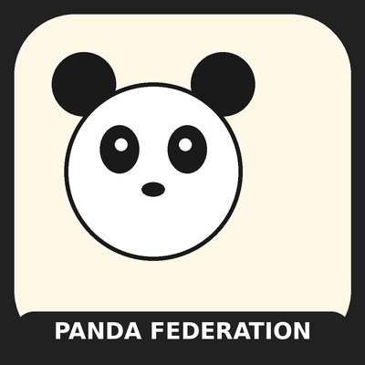

Quiet File Team MCP
Six free offline MCP tools for file-first agent teams
Free MIT No network calls stdio / uvx
Quiet File Team MCP gives Claude, Cursor or any MCP client six offline tools that explain, configure and check a Quiet File Team — several bots sharing one computer through files. Nothing leaves your machine: no network calls, no file reads of your disk, no paid APIs.
Use it with the free Bash core, or with the optional Agensi setup kit when you want a paid guided install.
Install
uvx --from git+https://github.com/pandadad0214/quiet-file-team-mcp.git@v0.1.0 quiet-file-team-mcp
MCP client config:
{"mcpServers":{"quiet-file-team":{"command":"uvx","args":["--from","git+https://github.com/pandadad0214/quiet-file-team-mcp.git@v0.1.0","quiet-file-team-mcp"]}}}
Tools
explain_method
Concepts and trust limits before an exercise.
Concepts and trust limits before an exercise.
generate_team_config
Safe roster and zone defaults; lead-only coordinator.
Safe roster and zone defaults; lead-only coordinator.
generate_early_exit
Draft a quoted early-exit block for a supplied role/path.
Draft a quoted early-exit block for a supplied role/path.
validate_layout_manifest
Compare supplied relative paths (no real filesystem scan).
Compare supplied relative paths (no real filesystem scan).
draft_workflow
Fictional practice steps for the default roster.
Fictional practice steps for the default roster.
draft_owner_batch
Deduplicate owner questions; keep unresolved task refs.
Deduplicate owner questions; keep unresolved task refs.